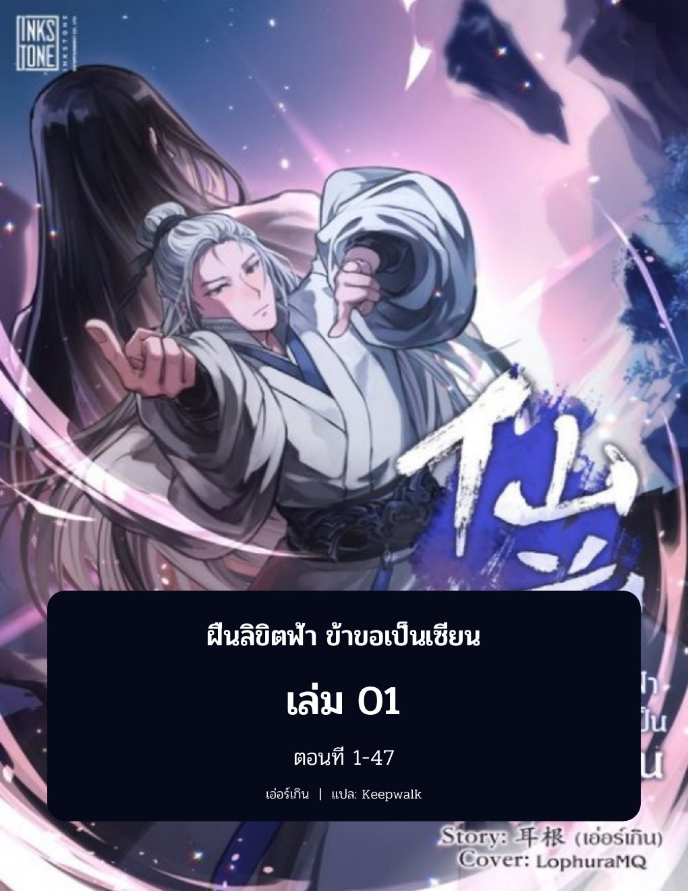

Xian Ni (仙逆) ฝืนลิขิตฟ้า ข้าขอเป็นเซียน
เรื่องราวของ "หวังหลิน" เด็กหนุ่มผู้ก้าวเข้าสู่เส้นทางการฝึกเซียนอันโหดเหี้ยม ด้วยความมุ่งมั่นและลูกปัดวิเศษเปลี่ยนชะตาชีวิต "ใครดีมาดีตอบ ใครร้ายมาร้ายกลับร้อยเท่าพันทวี!" จากจุดเริ่มต้นสู่มหาปฐมเทพผู้สั่นสะเทือนสรวงสวรรค์

กำลังโหลดชั้นหนังสือ 44 เล่ม...